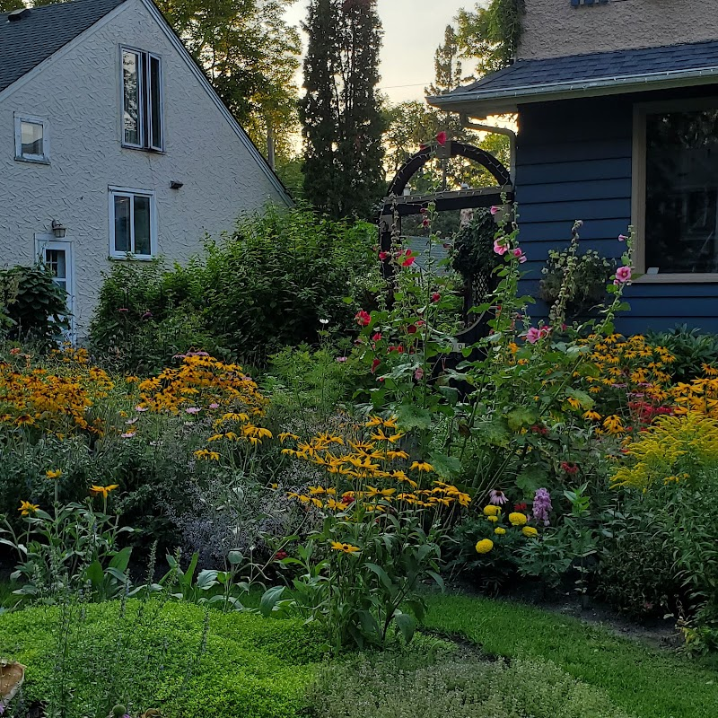

A walk from the Corydon Airbnb to Wellington Crescent

Corydon Avenue is the busy edge of the Crescentwood neighbourhood, Wellington Crescent, along the Assiniboine River, is the quiet one. If you're staying at the Corydon Airbnb and want a free, unhurried outing that doesn't involve a menu or a receipt, heading north through Crescentwood's residential streets to the river is a good way to spend an hour.
Getting there
From the Airbnb, it's an easy walk of roughly fifteen to twenty minutes north through Crescentwood to reach Wellington Crescent, or a much shorter ride if you've rented a bike. The route is entirely residential streets (no major roads to cross) so it's a relaxed way to see the neighbourhood between Corydon and the river.
What you'll see
Crescentwood's side streets are known for mature trees and well-kept gardens, especially in summer. Wellington Crescent itself is a designated historic district: development began in the early 1900s and drew Winnipeg's business elite, who built grand homes along the riverbank in Victorian, Edwardian, and Arts and Crafts styles. The street is wide with generous grassy boulevards, giving it a park-like feel rather than a typical city block, and there's a pedestrian bridge over the Assiniboine River if you want to cross to the other side.
Extending the walk
Wellington Crescent runs along the river from Osborne Street in the east to Assiniboine Park in the west, so once you're on it you can go either direction. Heading west eventually connects to Assiniboine Park itself, if you're up for a longer outing (see our Assiniboine Park guide), otherwise a short there-and-back stroll along the river is a good way to close out an afternoon.
Good to know: This is a walk through a residential neighbourhood, so keep noise down and stick to the sidewalk and boulevard, the homes along the crescent are private property. There's no fee and nothing to book; it's just a nice place to walk.